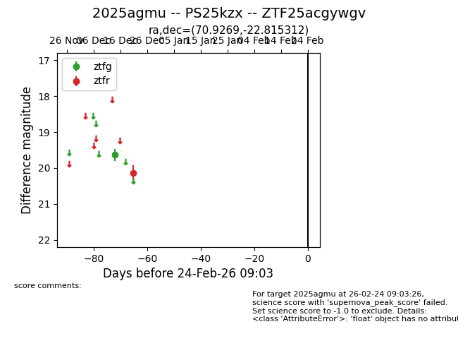
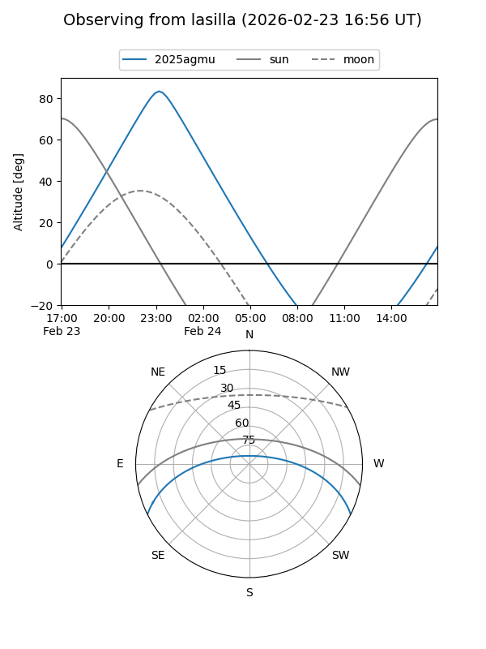
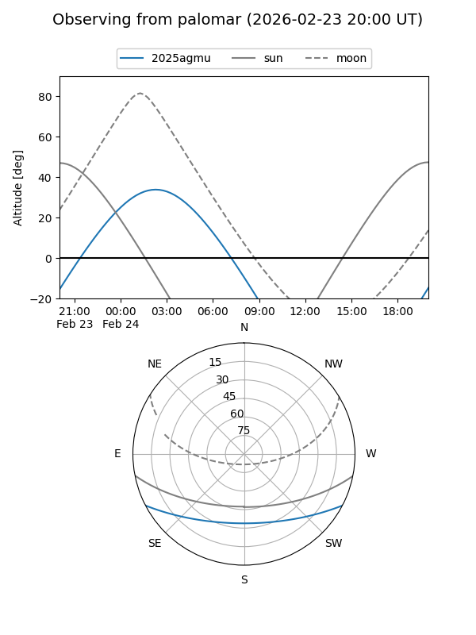

2025agmu
Target 2025agmu at 2026-01-09 12:49
Aliases and brokers:
FINK: link
Lasair: link
ALeRCE: link
TNS: link
YSE: link
alt names
ZTF25acgywgv (ztf,fink_ztf)
2025agmu (tns,yse)
PS25kzx (panstarrs)
Coordinates:
equatorial (ra, dec) = 70.9269,-22.81531
equatorial (HMS+DMS) = 04:43:42.46,-22:48:55.12
galactic (l, b) = (221.8529,-37.64127)
Flags:
Photometry:
last ztfg=19.64, ztfr=20.14
1 ztfg, 1 ztfr detections
Lightcurve

Visibility


Additional plots